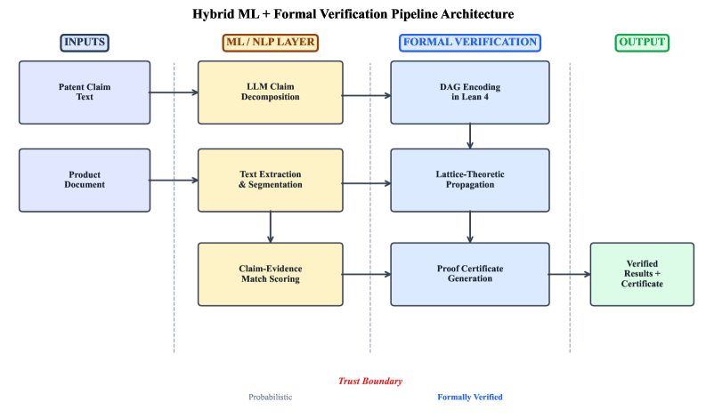
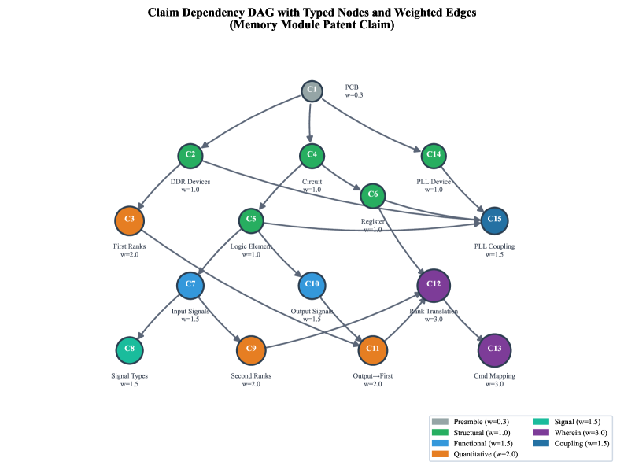

Hybrid AI + Lean 4 pipeline emitting kernel-checked certificates for patent analysis.
Abstract
We present a formally verified framework for patent analysis as a hybrid AI + Lean 4 pipeline. The DAG-coverage core (Algorithm 1b) is fully machine-verified once bounded match scores are fixed. Freedom-to-operate, claim-construction sensitivity, cross-claim consistency, and doctrine-of-equivalents analyses are formalized at the specification level with kernel-checked candidate certificates. Existing patent-analysis approaches rely on manual expert analysis (slow, non-scalable) or ML/NLP methods (probabilistic, opaque, non-compositional). To our knowledge, this is the first framework that applies interactive theorem proving based on dependent type theory to intellectual property analysis. Claims are encoded as DAGs in Lean 4, match strengths as elements of a verified complete lattice, and confidence scores propagate through dependencies via proven-correct monotone functions. We formalize five IP use cases (patent-to-product mapping, freedom-to-operate, claim construction sensitivity, cross-claim consistency, doctrine of equivalents) via six algorithms. Structural lemmas, the coverage-core generator, and the closed-path identity coverage = W_cov are machine-verified in Lean 4. Higher-level theorems for the other use cases remain informal proof sketches, and their proof-generation functions are architecturally mitigated (untrusted generators whose outputs are kernel-checked and sorry-free axiom-audited). Guarantees are conditional on the ML layer: they certify mathematical correctness of computations downstream of ML scores, not the accuracy of the scores themselves. A case study on a synthetic memory-module claim demonstrates weighted coverage and construction-sensitivity analysis. Validation against adjudicated cases is future work.
Problem
Patent analysis relies on manual expert review (slow, non-scalable) or ML/NLP methods (probabilistic, opaque, non-compositional). No existing framework applies interactive theorem proving to intellectual property analysis with machine-checkable guarantees.
Approach
A hybrid AI + Lean 4 pipeline encodes patent claims as DAGs, match strengths as elements of a verified complete lattice, and propagates confidence scores through dependencies via proven-correct monotone functions. Five IP use cases are formalized (patent-to-product mapping, freedom-to-operate, claim construction sensitivity, cross-claim consistency, doctrine of equivalents) via six algorithms. The DAG-coverage core is fully machine-verified; higher-level theorems use architecturally mitigated untrusted generators whose outputs are kernel-checked.

Figure 1 : Hybrid ML + Formal Verification Pipeline Architecture. The trust boundary separates probabilistic ML components (left) from formally verified components (right). For proof validity , only the Lean 4 kernel ( {\sim}5{,}000 lines of C++) must be trusted. End-to-end legal or semantic correctness , by contrast, additionally depends on the ML-layer outputs, \Phi_{v} construction, functional
Results
Structural lemmas, the coverage-core generator, and the closed-path identity coverage = W_cov are machine-verified in Lean 4. A case study on a synthetic memory-module claim demonstrates weighted coverage and construction-sensitivity analysis. Guarantees certify mathematical correctness downstream of ML scores, not the accuracy of the scores themselves.

Figure 2 : Claim dependency DAG for a memory module patent. Node colors represent component types; sizes are proportional to weights. The wherein nodes (C12, C13) receive the highest weight ( w{=}3.0 ). Arrows point from dependency to dependent: an arrow u\to v denotes that u\in\textit{deps}(v) , i.e., v ’s effective score is zeroed if \textit{eff}(u)<\theta .